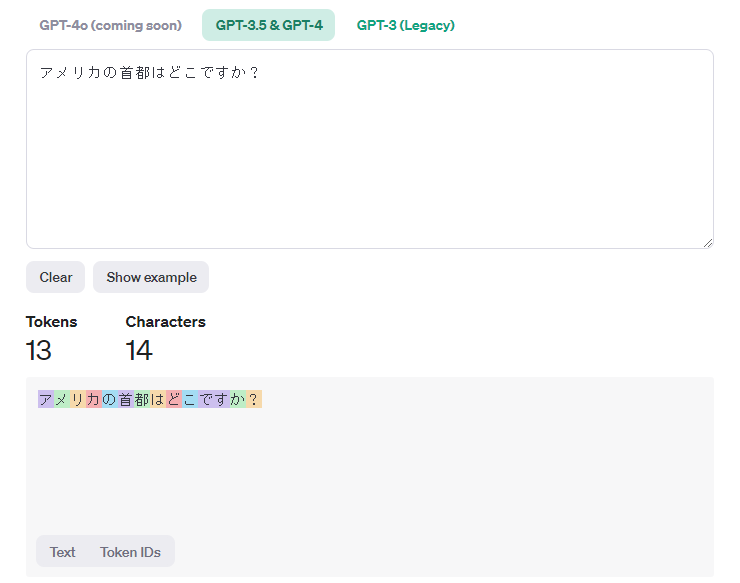
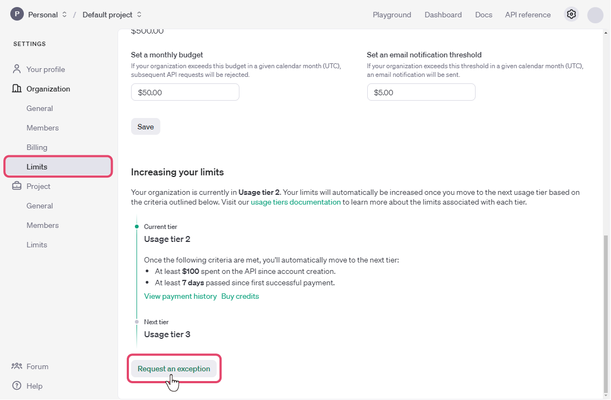
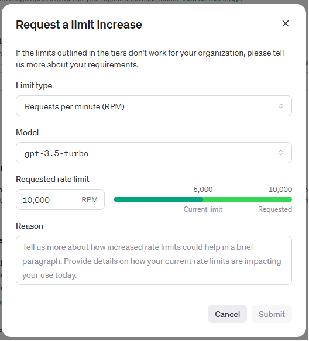
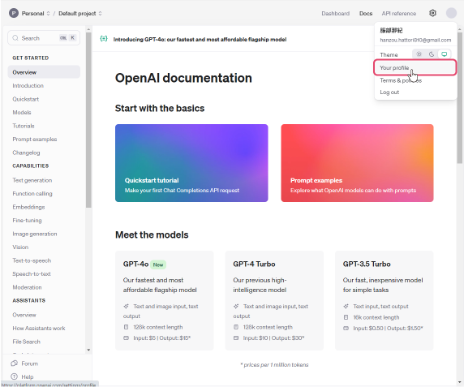
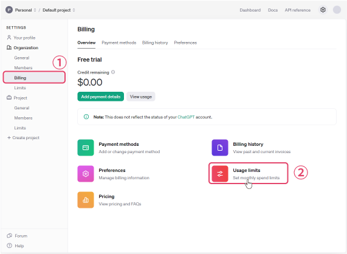

OpenAIの料金体系
ailia DX InsightにてOpenAIの機能（ChatGPT/dall-e等）を使用する場合、料金体系とレート制限について留意いただく必要がございます。 レート制限とはOpenAIではサービスの安定性等の観点から設けているもので、ユーザーのTier（利用レベル）によって、リクエスト数の制限がかかります。 特に多人数で1アカウントのご利用を考えている場合はレート制限を解除する為に準備期間として1週間以上（場合によっては3週間ほど）が掛かる場合がある為、ご注意ください。
ChatGPTのトークンについて
OpenAIの各モデルはトークンという単位で従量課金のお支払い金額が決まります。 入力したトークン数に応じた単価と出力したトークン数に応じた単価を足した金額が利用料金となります。
トークンとは、英語の場合は１単語が１トークン、日本語の場合は１文字が基本的には１～2トークンに該当します。また、日本語の場合、「です」「ます」等が２文字で１トークンとなることがあります。（ChatGPTのバージョンによってトークン数の判定が異なります）
また、句読点やクエスチョンマーク等もそれぞれ１トークンとしてカウントされます。
例） アメリカの首都はどこですか？ → 13トークン
例） What is the capital of the United States? → ９トークン
OpenAIが提供している「Tokenizer」というツールを使用すると、入力したトークンがどのようにカウントされているか確認することができます。

モデル毎の利用料金に関しては変動がある為、こちらからご確認ください。
レート制限
OpenAIではサービスの安定性等の観点からレート制限を設けています。
レート制限はRPM (リクエスト数/１分)、RPD (リクエスト数/１日)、TPM (トークン数/１分)、TPD (トークン数/１日)、IPM (イメージ数/１分) の５つの方法で測定されます。
レート制限は、最初に何が起こるかに応じて、どのオプションでもヒットする可能性があります。たとえば、100 トークンのみを含むリクエストを 20 回 ChatCompletions エンドポイントに送信すると、その 20 回のリクエスト内で 150,000 トークンを送信していなくても (TPM 制限が 150,000 の場合)、制限に達してしまいます (RPM が 20 の場合)。
また、レート制限はユーザーのTierと使用するモデルに毎に異なります。
レート制限について詳しくはOpenAIのHPよりご確認ください。
Tier
Tierは支払金額と最初の支払いからの経過日数によってTier1～Tier5の5段階に分かれています。（ユーザー登録のみの無料枠もあります）
| Tier | 条件 | 使用制限 |
|---|---|---|
| 無料 | $100/月 | |
| Tier1 | $5の支払い実績 | $100/月 |
| Tier2 | $50の支払い実績と最初の支払いから7日間以上の経過 | $500/月 |
| Tier3 | $100の支払い実績と最初の支払いから7日間以上の経過 | $1,000/月 |
| Tier4 | $250の支払い実績と最初の支払いから14日間以上の経過 | $5,000/月 |
| Tier5 | $1,000の支払い実績と最初の支払いから30日間以上の経過 | $50,000/月 |
※Tierの条件については変動の可能性がある為、OpenAIの公式HPも合わせてご参照ください。
レート制限の引き上げをリクエストする
Tier2以上になると、レート制限の引き上げをリクエストすることができます。
- Your profile内の「Limits」の項目内、一番下にある「Request an exception」を選択します。 
「Request a limit increase」のウィンドウが表示されますので、引き上げたい制限の要項を入力し、「Submit」を選択します。 
Limit type
制限タイプ：1分あたりのリクエスト数（RPM）/1分あたりのトークン数（TPM）/1分あたりの画像数（IPM）/月間使用制限（Monthly usage limit）の中から一つを選択します。Model（*）
制限を引き上げたいモデルを選択します。
（チャットとしての使用がメインであればgpt-4/ 画像生成の使用がメインであればdal-eとなると思います）Request rate limit
希望するレート制限の数値を入力します。Reasonレート制限の引き上げがどのように役立つか、現在のレート制限によってどのような不便があるか等について、簡単な文章で説明を入力してください。
（*）
Limit typeでMonthly usage limitを選択している場合はモデルの選択はありません。
支払い限度額を設定する
OpenAIのモデルは従量課金となっていて、使用制限をつけることで利用料金を管理することができます。
- OpenAIのホーム画面右上にアカウントのアイコンがあるので、クリックし、「Your profile」を選択します。
 - Settingsという画面になるので、左のメニューから「Billing」を選択し、「Usage limits」を選択します。
